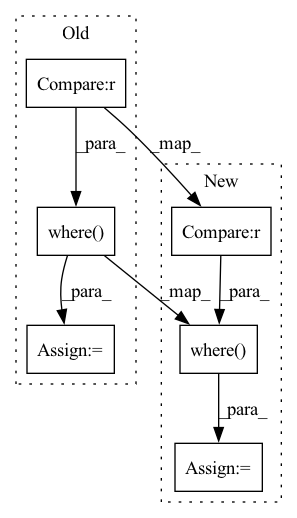

Pattern ID :29669
Before Change
tmp = g_t.sub(g_p).pow(2)
if self.f_under != 1:
// Weighting if gains are too low
tmp *= torch.where(g_p < g_t , self.f_under, 1.0)
if max_bin is not None:
m = torch.ones((b, 1, 1, f), device=input.device)
for i, mb in enumerate(max_bin):
m[i, ..., mb:] = 0After Change
tmp = g_t.sub(g_p).pow(2)
if self.f_under != 1:
// Weighting if gains are too low
tmp = tmp * torch.where(g_p < g_t , self.f_under, 1.0)
if max_bin is not None:
m = torch.ones((b, 1, 1, f), device=input.device)
for i, mb in enumerate(max_bin):
m[i, ..., mb:] = 0In pattern: SUPERPATTERN
Frequency: 3
Non-data size: 6
Instances Fragment ID: 87944381
Project Name: rikorose/deepfilternet
Commit Name: 9ef5fce18f7af5f101e512ad48a94142e17fae7b
Time: 2022-12-20
Author: h.schroeter@pm.me
File Name: DeepFilterNet/df/loss.py
M Class Name: MaskLoss
N Class Name: MaskLoss
M Method Name: forward(5)
N Method Name: forward(5)
M Parent Class: nn.Module
N Parent Class: nn.Module
M File Name: DeepFilterNet/df/loss.py
N File Name: DeepFilterNet/df/loss.py
M Start Line: 261
M End Line: 264
N Start Line: 260
N End Line: 263
Before Change
best_match_labels = tf.gather(labels, best_match_indxes)
// Mark anchors classes, iou < ignore_threshold as -1, ignore_threshold < iou < overlap_threshold as -2
anchor_classes = tf.where(anchor_best_ious > ignore_threshold , tf.cast(-2, best_match_labels.dtype), tf.cast(-1, best_match_labels.dtype))
// Mark matched anchors classes, iou > overlap_threshold as actual labels
// anchor_classes = tf.where(anchor_best_ious > overlap_threshold, labels[anchor_best_iou_ids], anchor_classes)
anchor_classes = tf.tensor_scatter_nd_update(anchor_classes, matched_idxes_nd, best_match_labels)
valid_anchors = tf.gather(anchors, matched_idxes)
valid_anchors_center, valid_anchors_wh = corners_to_center_xywh_nd(valid_anchors)
bboxes_center, bboxes_wh = corners_to_center_xywh_nd(bboxes)
bboxes_centers, bboxes_whs = tf.gather(bboxes_center, best_match_indxes), tf.gather(bboxes_wh, best_match_indxes)
encoded_anchors_center = (bboxes_centers - valid_anchors_center) / valid_anchors_wh
encoded_anchors_wh = tf.math.log(bboxes_whs / valid_anchors_wh)
encoded_anchors = tf.concat([encoded_anchors_center, encoded_anchors_wh], axis=-1)
dest_boxes = tf.zeros_like(anchors)
dest_boxes = tf.tensor_scatter_nd_update(dest_boxes, matched_idxes_nd, encoded_anchors)
anchor_classes = tf.expand_dims(tf.cast(anchor_classes, dest_boxes.dtype), -1)
rr = tf.concat([dest_boxes, anchor_classes], axis=-1)
return rr
After Change
best_match_labels = tf.gather(labels, best_match_indxes)
// Mark anchors classes, iou < ignore_threshold as 0, ignore_threshold < iou < overlap_threshold as -1
anchor_classes = tf.where(anchor_best_ious > ignore_threshold , tf.cast(-1, bbox_labels.dtype), tf.cast(0, bbox_labels.dtype))
// Mark matched anchors classes, iou > overlap_threshold as actual labels
// anchor_classes = tf.where(anchor_best_ious > overlap_threshold, labels[anchor_best_iou_ids], anchor_classes)
anchor_classes = tf.tensor_scatter_nd_update(anchor_classes, matched_idxes_nd, tf.cast(best_match_labels, bbox_labels.dtype))
Fragment ID: 87944377
Project Name: leondgarse/keras_cv_attention_models
Commit Name: 72442f0cd3114eb4a7a30ae1a58e568c70d93172
Time: 2022-02-24
Author: leondgarse@gmail.com
File Name: keras_cv_attention_models/coco/data.py
M Class Name: AnonimousClass
N Class Name: AnonimousClass
M Method Name: assign_anchor_classes_by_iou_with_bboxes(4)
N Method Name: assign_anchor_classes_by_iou_with_bboxes(5)
M Parent Class:
N Parent Class:
M File Name: keras_cv_attention_models/coco/data.py
N File Name: keras_cv_attention_models/coco/data.py
M Start Line: 88
M End Line: 120
N Start Line: 92
N End Line: 125
Before Change
loss = F.mse_loss(input_abs, target_abs) * self.f_m
if self.f_under != 1:
// Weighting if predicted abs is too low
loss = loss * torch.where(input_abs < target_abs , self.f_u, 1.0)
if self.f_c > 0:
if self.gamma != 1:
input = input_abs * torch.exp(1j * angle.apply(input))
target = target_abs * torch.exp(1j * angle.apply(target))After Change
tmp = (input_abs - target_abs).pow(2)
if self.f_u != 1:
// Weighting if predicted abs is too low
tmp *= torch.where(input_abs < target_abs , self.f_u, 1.0)
loss = torch.mean(tmp) * self.f_m
if self.f_c > 0:
if self.gamma != 1:
input = input_abs * torch.exp(1j * angle.apply(input)) Fragment ID: 87944378
Project Name: rikorose/deepfilternet
Commit Name: 0675930ad5e32849bd06ca2de018dcebfc043de5
Time: 2022-10-20
Author: Rikorose@users.noreply.github.com
File Name: DeepFilterNet/df/loss.py
M Class Name: SpectralLoss
N Class Name: SpectralLoss
M Method Name: forward(3)
N Method Name: forward(3)
M Parent Class: nn.Module
N Parent Class: nn.Module
M File Name: DeepFilterNet/df/loss.py
N File Name: DeepFilterNet/df/loss.py
M Start Line: 158
M End Line: 167
N Start Line: 158
N End Line: 167